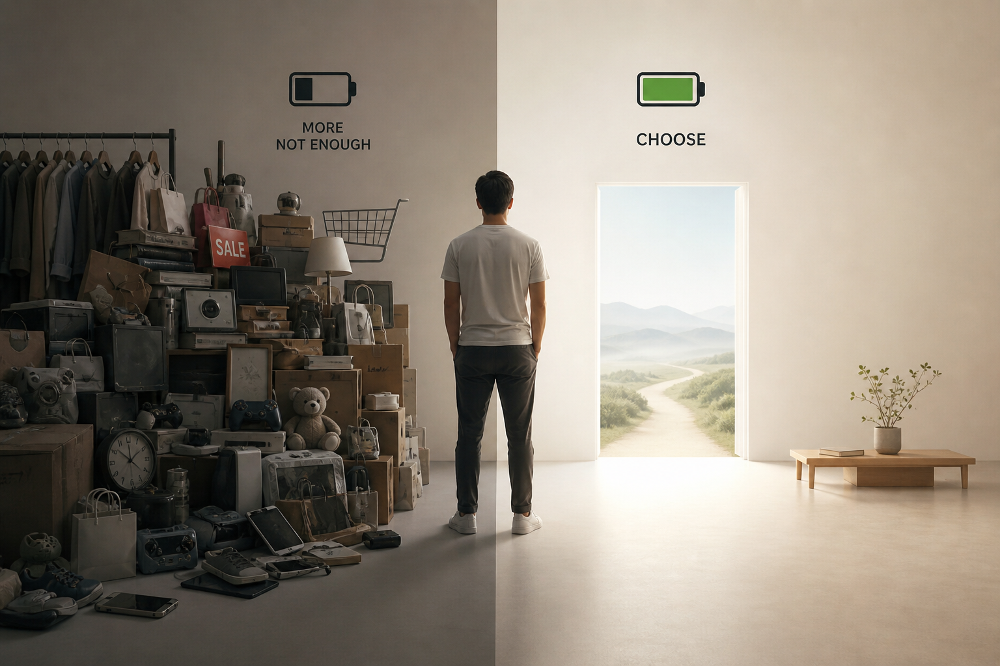

Sống tối giản có phải là tự do hơn?

Trong bối cảnh xã hội tiêu dùng phát triển mạnh mẽ, “sống tối giản” thường được xem như con đường dẫn đến tự do: ít đồ đạc hơn, ít ràng buộc hơn, và vì thế, nhẹ nhõm hơn.
Tuy nhiên, nếu nhìn dưới góc độ triết học, việc giảm bớt sở hữu không tự động đem lại tự do. Nó chỉ mở ra một khả năng – khả năng lựa chọn sáng suốt hơn.
Trước hết, cần phân biệt giữa “tự do khỏi” (freedom from) và “tự do để” (freedom to). Khi ta loại bỏ những vật dụng dư thừa, ta có thể đạt được “tự do khỏi” sự bận tâm, lo lắng, và áp lực vật chất. Nhưng điều đó không đồng nghĩa với việc ta có “tự do để” sống một cuộc đời ý nghĩa. Một căn phòng trống không chưa chắc khiến con người trở nên tự do hơn nếu tâm trí vẫn bị chi phối bởi ham muốn, so sánh hay bất an.
Triết gia hiện sinh nhấn mạnh rằng tự do gắn liền với trách nhiệm lựa chọn. Sống tối giản có thể làm giảm “nhiễu” từ thế giới vật chất, giúp con người nhìn rõ hơn điều gì thực sự quan trọng. Nhưng chính trong khoảng trống ấy, con người phải đối diện với câu hỏi: mình sẽ làm gì với sự giản lược này? Nếu không có định hướng, tối giản có thể trở thành một hình thức khác của sự trốn tránh – thay vì đối mặt với ý nghĩa cuộc sống, ta chỉ đơn giản là sở hữu ít đi.
Mặt khác, việc giảm bớt sở hữu có thể giúp tái cấu trúc giá trị cá nhân. Khi không còn bị cuốn vào việc tích lũy, con người có cơ hội tập trung vào trải nghiệm, mối quan hệ, và sự phát triển nội tâm. Ở đây, tối giản không phải là mục tiêu cuối cùng mà là phương tiện: nó tạo ra không gian để ta lựa chọn có ý thức hơn, thay vì bị dẫn dắt bởi thói quen hay áp lực xã hội.
Tuy vậy, cũng cần cảnh giác với việc lý tưởng hóa tối giản. Khi nó trở thành một “chuẩn mực đạo đức” mới, người ta có thể rơi vào sự phán xét hoặc áp lực phải sống “đúng cách”. Điều này lại tạo ra một dạng ràng buộc khác – trái ngược với tinh thần tự do mà tối giản hướng tới.
Tóm lại, sống tối giản không tự động đem lại tự do. Nhưng nó có thể là một bước khởi đầu quan trọng: bằng cách giảm bớt những gì không cần thiết, con người có cơ hội nhìn rõ hơn chính mình và lựa chọn con đường phù hợp. Tự do, rốt cuộc, không nằm ở số lượng vật ta sở hữu, mà ở khả năng ta hiểu và quyết định cách mình sống.